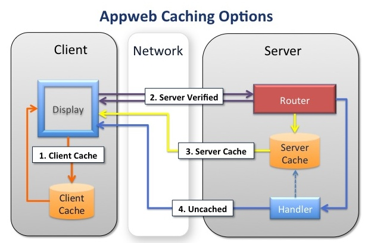

Response Caching
Response Caching is an ideal technique for speeding up a wide variety of web applications. Frequently used pages are cached and therefore served faster than the normal approach of generating the web page each and every time the user visits the page. However, caching can be a complex topic as there are several places to locate the cached content and many ways to configure the overall caching architecture. This document provides a basic overview of Appweb caching and how to configure its caching capabilities.
Why Cache?
When a browser issues an HTTP request to a server, that request must be transmitted and received. Then the response must be computed, delivered and finally rendered in the browser. This process may take from fractions of a second up to many seconds to complete. The delays are comprised of the many steps the request and response must traverse from the browser to the server and back. These steps all impart delay. The key delays are:
- Network travel time for the request to travel from the browser to the server
- Processing time to run the request and to prepare a response
- Network travel time for the response to travel from the server to the browser
Network travel time for the request and response can be highly variable depending on network congestion. On a fast network with little traffic, the delay can be small (less than 1/10 second). On slow networks, it can be upwards of many seconds. Request processing time for complex web pages can easily be several seconds. Response Caching can greatly assist by reducing these delays. By caching the response at the client, the network delay can be reduced or eliminated altogether. By caching at the server, the time to generate the response can be eliminated.
Caching Options
When responding to a client request, there are four alternative ways to utilize Appweb caching:
Options
- Use the client cache and don't contact the server at all.
- Use the client cache but first check with the server to determine whether the client cache is acceptable.
- Use the server cache because the client doesn't have a usable response.
- Don't use any cache and generate a new response
There are pros/cons and tradeoffs with each option. The best solution is often a blend of all approaches.
Client Cache With No Server Contact
Caching in the client is the fastest. It eliminates network delays and can respond to client requests in milliseconds. However, it is impossible to know if the server has updated data that renders the cached response stale. This kind of caching is best for static content that is rarely updated and for which the consequences of serving stale content are non-critical.
Client Cache With Server Verification
The downside of client caching without server contact can be offset by contacting the server and verifying that the client-cached data is current. In this mode, both the client and server retain cached copies of the response. When the client makes a request, it submits the unique Etag and modification date of the response. The server checks these two fields against its cached copy and if they match, the server responds to the client immediately without regenerating the response. This eliminates the delay in generating the response. Furthermore, the server can respond with a 304 Not-Modified header and omit the response content itself. So the response is very small and will travel quickly over the network.
If the client cache does not match the server cache, the response must contain the full response data.
The advantage of this mode, is that the server keeps control and can immediately update cached content. It eliminates the delay in generating the response and can greatly reduce network traffic. The downside is that the server must be contacted by the client with the associated network latency.
If the client cache either does not contain a response, or the client cache has a stale response, the server must transmit the full response data back to the client. In this case, the cost of generating the response is eliminated, but the full response data must be sent over the network to the client.
This kind of caching is best for dynamic web pages that are viewed more often than the data on which they depend is updated.
Caching on the Server
On the server, there are three paradigms for how and when to update cached responses.
- Pull-Through
- Manual Verification
- Event Driven
Pull-Through Caching
Pull-through caching is mostly transparent. If caching has been configured for a request, the first time a request is received for a resource, the Appweb cacheFilter automatically captures the response headers and data and saves it for future requests. When a subsequent request for the same resource is received, the Appweb request router examines the cache and if the cached data is current, it will be returned to the client without running the request handler and regenerating the response. This paradigm is useful when it is acceptable (within limits) to serve a stale page to the client. The configured lifespan of cached responses effectively controls "how stale" the cached response may be, before it will be automatically removed from the cache.
Manual Verification
In Manual Verification mode, the Appweb request handler is always invoked, so it can determine if any server state has changed that would require regenerating the response. The handler will manually send the cached response (if it is current) by using the espRenderCached API. If the response is stale, it will generate a new response. In both cases, the Appweb cacheFilter will automatically capture the response and save it to the cache for future requests. This paradigm is useful when a stale page must never be sent to the client and the handler must retain absolute control.
Event Driven
In Event Driven mode, the web page is not generated in response to a client request, but rather in response to some state change on the server system. The pre-generated web page is then manually stored in the cache by calling the espUpdateCache API. When the client request is subsequently received, the response is retrieved from the cache without running a request handler. This paradigm is effective if the delay in creating a response web page is large. In that case, pre-computing the web page in the background means that the client request can be serviced very quickly without waiting for the page to be generated.
Configuring Caching
Appweb caching is configured via the Cache configuration directive. This directive specifies:
- Whether the client should contact the server to verify content
- How long the client should cache the response
- What requests to cache
- How to handle request parameters
Here are a few examples:
Cache 86000 Cache client=86400 ext="gif,jpg,png,ico" Cache server methods="GET" Cache server methods="GET,POST" /status.esp /inventory.esp Cache server all /user/login.esp Cache server only /user/login.esp?first=1 Cache server unique /user/login.esp Cache server manual /dashboard.esp
The Cache 8600 directive defines a default cache lifespan for the current route. If subsequent Cache directives do not define a lifespan, this default will be used.
The Cache client=86400 ext="gif,jpg,png,ico" directive will cache images with the specified extensions at the client-side for one day (86400 seconds). The client will not contact the server to refresh these images unless reload is clicked on the browser.
The Cache server methods="GET" directive will cause all requests using the HTTP GET method to be cached at the server with the default lifespan. Note, such global caching of all requests is typically not what is desired.
The Cache server methods="GET,POST" /status.esp /inventory.esp directive will cache the /status.esp and /inventory.esp URIs if the requests use the GET or POST HTTP methods.
The Cache server all /user/login.esp directive will cache all requests that have the given URI regardless of any additional query, POST data or route parameters. i.e. this means the request "/users/login.esp?fast" will use the same cached response as "/users/login.esp".
The Cache server only /user/login.esp?first=1 directive will cache "only" this exact request. When matching a request with this cache record, the request parameters (query, POST data and route parameters) will be added to the request URI to form a sorted www-urlencoded URI. This means that different request parameters will not be cached and only the exact form specified will be cached.
The Cache server unique /user/login.esp directive will cache all requests with a matching request pathInfo regardless of the request parameters. However, each request with different request parameters will be cached uniquely. This means that the URI "/users/login.esp?first" will be cached differently to the URI "/usrs/login.esp?second". Note that this applies to POST data and route parameters as well as request query information.
The Cache server manual /dashboard.esp directive will invoke manual mode where the Appweb handlers must manually send the cached response to the client. The response will then be automatically cached by the cacheFilter for subsequent requests.
See the Cache directive documentation for full details.
Inheriting Caching Configuration
Each Cache directive creates a cache record that applies to the current route in the appweb.conf configuration file. Requests that match the current route will consider the caching records in the order in which they are defined in the configuration file. The first matching cache record will be used for the request.
Caching records, like most other configuration file settings, are inherited by inner routes. Consequently, if you define a caching record at the default server level, all subsequent routes will inherit that caching definition.
Performance Considerations
Cache Lifespans
When selecting a lifespan for a resource, ask the questions:
- How stale is it acceptable for this resource to be?
- How often is this resource updated?
- How often is this resource viewed?
If it is acceptable to display a stale resource, then select a client-side lifespan that is set toward the maximum acceptable staleness. If a resource is present on every page, such as a logo or banner, it is very beneficial to use client-side caching, even if the lifespan is set to as little as 60 seconds.
LimitMemory
Server-side caching consumes memory for every request that is cached. As memory is a limited resource, you may wish to limit the memory that Appweb may consume via the LimitMemory configuration file directive. This will put an upper limit on the amount of memory that can be used for caching. When Appweb exceeds 85% of this memory limit, it will start to prune cached resources from the cache. Setting a higher memory limit, will enable more resources to be cached and Appweb to run faster.
Debugging and Trace Logs
If the caching is not operating as expected, run Appweb with trace at level 4. This will trace critical details about how Appweb is processing the request. It will display the selected route and also trace information about whether cached responses have been found and are suitable for use.
appweb --log stdout:4
Deciding Criteria
In summary, here are some rules of thumb to assist in designing your caching strategy.
- If a resource is accessed frequently, use server-side caching.
- If it is acceptable to serve stale content and the content is rarely updated, use client-side caching.
- If it is not acceptable to serve stale content, use manual server-side caching.
- If the web page is very expensive to generate, consider event-driven pre-rendering.
Appweb caching can deliver great performance gains, even if using slower page rendering technologies like PHP or CGI.